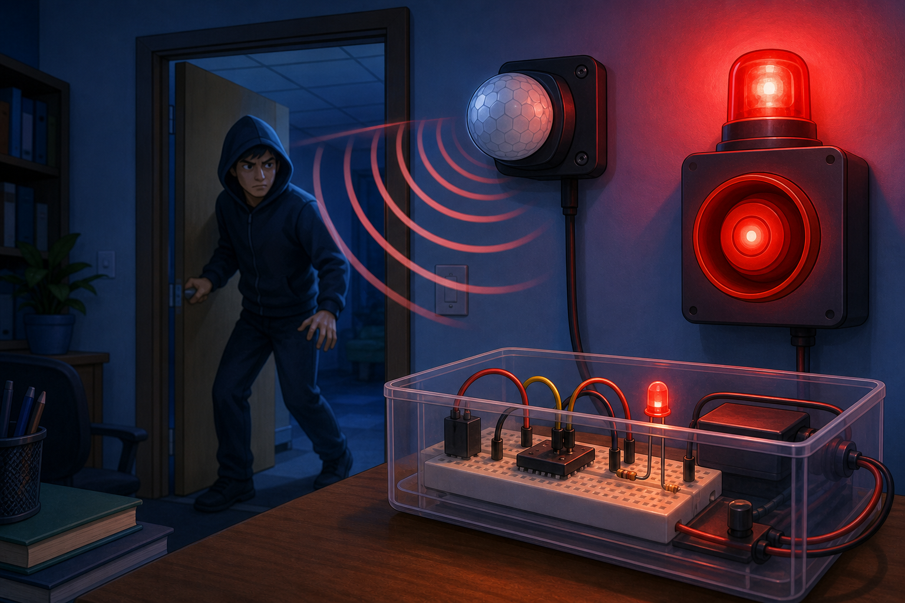

Automatic hallway light
DetectPerson moving past sensor
→
DecideSomeone has arrived
→
DoTurn on light
A PIR sensor tells your project when something warm moves nearby.
PIR stands for passive infrared. It detects changes in infrared energy, so it is very good at noticing people moving through its view.
Your projects can use a PIR sensor for automatic lights, security alarms, or movement-triggered actions.

from gpiozero import MotionSensor
pir = MotionSensor(4)
motion = pir.motion_detectedfrom machine import Pin
pir = Pin(2, Pin.IN)
motion = pir.value()motion later in your Decide code to react when someone moves. Many PIR modules need a short warm-up time after power is connected before their readings settle.